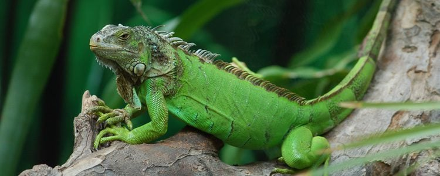
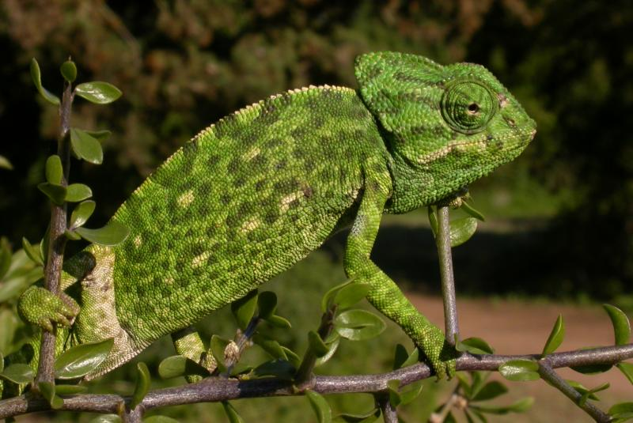
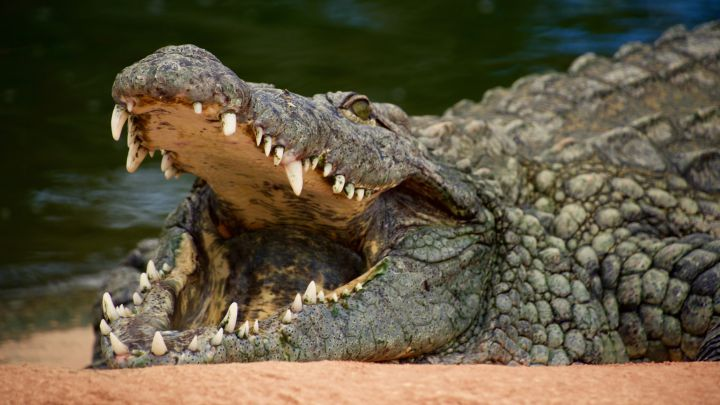
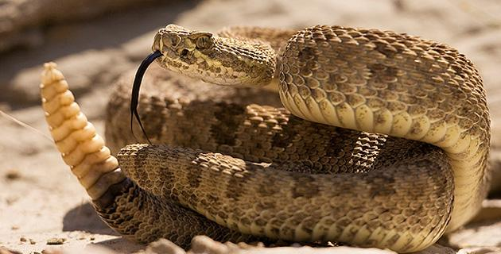

Se distribuye en Costa Rica, Panamá y en gran parte de Sudamérica entre los 0-1000 m. En Sudamérica se encuentra en Venezuela, Colombia, Ecuador, Perú, Bolivia, Paraguay y Brasil y ha sido introducida en el sur de Florida y Hawaii. En el Ecuador se ha reportado en las provincias de Santo Domingo de los Tsáchilas, Guayas, Manabí, Esmeraldas, Los Ríos, El Oro, Cañar y Loja, entre los 8 y 350 msnm.
Habita bosques de tierras bajas, por lo general en la cercanía de arroyos, ríos y lagos; y regiones boscosas aisladas, en medio de sabana
- Su piel está recubierta de pequeñas escamas
- Tienen una cresta dorsal que recorre desde su cabeza hasta su cola
- Capaz de reproducirse sexual y asexualmente
- Oviparo
- Animal de sangre fría
Regresar al Menu

La mayor parte de los camaleones habitan en África y en Madagascar, aunque algunas especies también se encuentran en partes del sur de Europa, Sri Lanka, India y Asia Menor. Diferentes especies habitan diferentes ambientes, como montañas, junglas, sabanas y a veces desiertos y estepas.Los camaleones viven, en su mayor parte, en ambientes forestales, pero también se hallan algunos en matorrales, y algunas especies viven en el suelo, debajo de las hojas. Pueden pasar de un árbol a otro gracias a la habilidad prensil de su cola y de sus patas. Además de la característica propia de cambiar de color, los camaleones también cambian de piel como las serpientes, dos veces al año.
- Piel dura
- Colores variados que van del verde intenso al marrón
- La coloración de las partes superiores varía en función de su estado de ánimo y condiciones de salud (gris, verde o marrón)
- Adaptado a la vida arborícola
- Es un reptil de pequeño tamaño
Regresar al Menu

Los cocodrilos son grandes reptiles que habitan en los trópicos de América, Australia, África y Asia. Europa es el único continente en el que no viven nativamente. What is this? Los cocodrilos son habitantes de pantanos, lagos y ríos, aunque algunas especies se dirigen a aguas salobres o al mar.el factor más limitante para que los cocodrilos desarrollen todas sus funciones vitales es que se encuentren en hábitats semiacuáticos, preferiblemente en áreas de regiones tropicales. De esta forma, los cocodrilos habitan tanto en ecosistemas con agua dulce (ríos, lagos, humedales y cualquier otro tipo de cuenca de agua natural), así como en ecosistemas en los que haya agua salobre (estuarios o manglares).
- Piel Gruesa
- Tienen cuerpos muy pesados
- Son animales muy longevos que llegan a vivir hasta cincuenta u ochenta años
- Tienen una gran capacidad para permanecer inmóviles
- La apertura de sus enormes mandíbulas les permite regular su temperatura corporal y adaptarse a la temperatura ambiental
Regresar al Menu

Se le relaciona con desiertos y zonas áridas de elevadas temperaturas, pero también sobreviven en bosques, praderas, pantanos y colinas rocosas. Su rango de temperatura es de 26 a 32° C pero se ha observado que algunas llegan a vivir sin problema con 2° C.
- Venenosa
- Son fácilmente reconocibles por el característico sonido de su cascabel
- Su cuerpo está cubierto por pequeñas y múltiples escamas de colores variados
- Carecen de párpados, pero sus ojos están protegidos por duras escamas transparentes
- sus oídos son disfuncionales
Regresar al Menu
Regresar a la página de Inicio